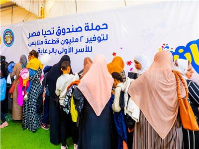

الأسر الأكثر احتياجاً
في إطار توجيهات الرئيس عبد الفتاح السيسى، بالاهتمام بالأسر الأولى بالرعاية والأكثر احتياجا وتوفير الدعم اللازم لهم من خلال مشاركات منظمات المجتمع المدنى والجمعيات الأهلية، وتقديم كافة أوجه الدعم للأسر الأولى بالرعاية تزامناً مع شهر الشتاء.
وأكدت الدكتورة إنجى حسن، وكيلة وزارة التضامن الاجتماعى ببني سويف، استمرار التعاون مع الجمعيات الأهلية ومؤسسات المجتمع المدني للقيام بدورها المجتمعي لرعاية الأسر الأولى بالرعاية تنفيذاً لمبادرة رئيس الجمهورية (حياة كريمة ) لرفع العبء والمعاناة عن كاهلهم وليحيوا حياة كريمة،
مشيدة بالجهود المتميزة لمؤسسات وجمعيات المجتمع المدنى التى تسهم دائمًا فى إضفاء الفرحة والبهجة على وجوه البسطاء والأسر الأكثر احتياجًا من خلال ما يتم تقديمه من أوجه الدعم والمساندة للفئات المستهدفة.
من جانبه، قال اللواء ممدوح شعبان، مدير عام جمعية الأورمان، إن الجمعية بدأت اعادة إعمار المنازل المتهالكة وتعريش الأسقف منذ سنوات بمحافظة بني سويف، ونجحت حتى الآن فى إعادة إعمار وتعريش أسقف العديد من المنازل بجميع مراكز المحافظة ، وذلك بالتعاون مع الجمعيات الأهلية الصغيرة المنتشرة فى أنحاء المحافظة.

Home Page